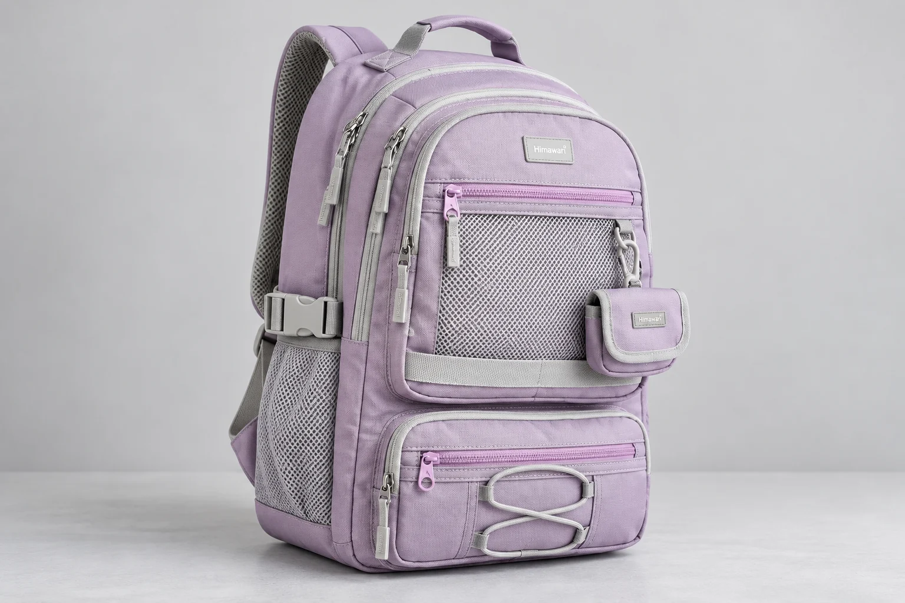
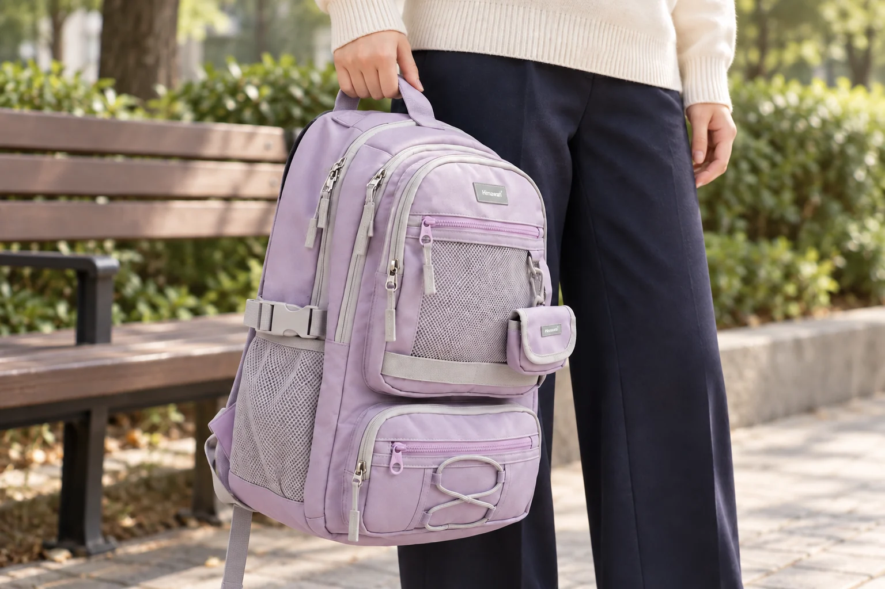

백팩의 메쉬, 앞 포켓과 옆면과 등판에서 하는 일이 다르다

백팩의 메쉬를 보면 먼저 그물 모양 원단이 눈에 들어옵니다. 그런데 앞쪽에 있는 메쉬와 물병 옆의 메쉬, 어깨에 닿는 메쉬를 같은 기능으로 읽으면 가방 구조를 잘못 이해할 수 있습니다. 하나는 지퍼로 닫는 포켓이고 다른 하나는 위가 열린 주머니이며, 몸 쪽의 메쉬는 물건을 넣는 입구가 없는 쿠션 표면일 수 있습니다. 원단의 모양보다 어디에 붙었고 어떻게 열리는지를 먼저 볼 이유입니다.
히마와리 No.9291 라벤더의 대표 사진에는 밝은 회색 메쉬가 앞면과 옆면에 보입니다. 같은 모델의 상세 자료는 메쉬 지퍼 포켓, 사이드 메쉬 포켓, 메쉬 쿠션 등판과 스트랩을 각각 다른 항목으로 소개합니다. 색이 다른 상세 사진은 구조를 읽는 보조 자료로 쓰고, 실제 고를 라벤더 배색은 해당 색의 원본 사진에서 대조합니다. 이 글도 그 구분 안에서 세 위치를 살펴봅니다.
앞에서는 그물보다 위쪽 지퍼가 먼저다
No.9291의 앞쪽 메쉬 부분에는 위를 가로지르는 지퍼가 있습니다. 제품 자료도 이 부분을 메쉬 지퍼 포켓으로 부릅니다. 옆의 열린 주머니와 달리 여밈을 열고 닫는 동작이 포함되는 구조입니다. 메쉬를 통해 안이 어느 정도 보이는지와 실제로 물건을 넣고 꺼낼 수 있는 입구가 어디인지는 서로 다른 질문입니다. 표면이 넓게 보인다고 그 전체가 입구가 되는 것은 아닙니다.
작은 물건을 정리할 곳으로 생각한다면 먼저 지퍼가 열리는 범위를 봅니다. 손으로 잡을 물건의 크기와 포켓 입구의 관계를 확인해야 하며, 앞면에서 보이는 네모 면적을 그대로 수납 가능 크기로 쓸 수는 없습니다. 메쉬 뒤에 다른 원단이 겹치는 부분이 있는지도 사진에서 살필 수 있습니다. 그물 무늬만 보고 모든 내용물이 선명하게 드러나는 투명 포켓이라고 단정하지 않는 편이 정확합니다.
가령 안을 눈으로 찾아보고 싶은 물건과 밖에서 보이지 않았으면 하는 물건이 있다면 필요한 조건이 다릅니다. 앞쪽 포켓을 쓸지 판단할 때에는 실제로 비치는 범위와 여밈 상태를 확인합니다. 메쉬의 구멍 크기나 안쪽 원단이 자료에 수치로 제시되지 않았다면 동전 같은 작은 물건이 빠지지 않는다고 보장할 수도 없습니다. 작은 물건을 별도 용기에 넣을지는 자신의 물건과 실제 포켓을 대조해 정합니다.
옆에서는 위가 열린 입구와 옆 끈을 나누어 본다
상세 사진의 옆 메쉬 포켓은 위로 물건을 넣는 형태입니다. 앞 지퍼 포켓의 사용법을 그대로 옮길 수 없는 이유가 여기에 있습니다. 위쪽에서 물건을 잡는 방향을 생각하면 포켓 입구의 높이와 물건이 밖으로 남는 부분이 함께 중요해집니다. 제품 사진에 병이 들어 있다는 사실은 그 사진의 배치를 보여주지만 모든 물병이 같은 깊이로 들어가거나 고정된다는 뜻은 아닙니다.
옆에는 별도의 가로 끈과 버클도 보입니다. 메쉬 주머니와 끈은 가까이 놓여 있어도 같은 부품이 아닙니다. 주머니에 넣는 동작, 끈을 여닫는 동작이 서로 간섭하는지는 실제 물건을 대보며 살필 항목입니다. 버클이 보인다는 이유로 자신이 가진 병을 반드시 붙잡아주는 구조라고 해석하지 않습니다. 끈이 닿을 높이와 병의 몸통 모양이 맞는지, 손으로 꺼낼 때 어느 부품을 먼저 다룰지 확인할 필요가 있습니다.
옆 포켓을 비운 상태로 손잡이를 잡고 옮기면 백팩의 옆면이 어떻게 보이는지 살펴볼 수 있습니다. 메고 있을 때는 몸 뒤쪽으로 돌아가 잘 안 보이던 입구가 손에 들었을 때는 바로 보입니다. 물건을 자주 꺼낼 계획이라면 가방을 내려놓는 경우와 손으로 든 경우를 나누어 동작을 생각해보세요. 어깨에 멘 채 손을 무리하게 뻗는 장면만으로 사용법을 정할 필요는 없습니다.

등과 어깨에서는 수납 입구를 찾지 않는다
No.9291의 등판과 어깨끈 안쪽 메쉬는 상세 자료에서 쿠션 구조의 표면으로 소개됩니다. 앞과 옆에서 보던 포켓과 달리 몸에 닿는 면을 살필 부분입니다. 그물 모양이 이어진다고 그 아래를 소지품 넣는 공간으로 읽거나, 봉제된 가장자리를 포켓 입구처럼 벌려보려 할 이유가 없습니다. 닫힌 봉제부와 실제로 열리는 여밈을 구별하는 것이 먼저입니다.
몸에 닿는 부위에서는 옷과 만나는 위치, 봉제 가장자리, 끈이 비틀리지 않았는지를 봅니다. 같은 메쉬라도 손끝으로 보는 표면과 옷 위에서 닿는 느낌은 다를 수 있습니다. 원단에 구멍이 보인다는 것만으로 땀이 차지 않는다거나 일정 시간 동안 시원하다는 결과를 알 수는 없습니다. 제품 자료가 소개하는 구조와 본인이 착용해서 확인할 느낌을 나누어두면 소재 이름에 기대를 과하게 싣지 않게 됩니다.
메쉬라는 표현 자체가 방수 성능을 알려주지도 않습니다. 특히 옆의 오픈 포켓은 위로 열린 입구를 갖기 때문에 원단 설명과 별개로 물이 들어올 경로를 생각해야 합니다. 가방 전체에 대한 안내가 있다면 어느 부위와 어느 사용 조건을 말하는지 읽습니다. 그 안내를 모든 포켓과 모든 여밈의 성능으로 확장하지 않으면 비 오는 날 넣을 물건을 결정할 때도 기준이 명확해집니다.
같은 소재 이름 대신 세 가지 사용 동작을 비교하기
이 차이를 비교표로 남길 때는 앞 포켓에는 지퍼를 열고 닫기, 옆 포켓에는 위에서 넣고 빼기, 등판과 어깨끈에는 옷 위에 맞닿기라고 적을 수 있습니다. 메쉬가 세 곳 있다는 수량보다 자신이 반복할 동작이 드러나는 기록입니다. 앞쪽에 자주 손이 가는 사람과 옆에서 물건을 꺼내는 사람이 같은 가방을 보고 서로 다른 부위를 먼저 살피는 이유도 설명됩니다.
현재 No.9291의 외부 크기는 가로 31, 세로 45, 폭 15cm로 안내되어 있습니다. 이것은 가방 전체의 비교값이며 앞이나 옆 포켓의 안쪽 치수가 아닙니다. 세 위치의 메쉬를 읽는 과정에서도 전체 치수로 포켓 크기를 계산하지 않습니다. 필요한 물건이 특정 포켓에 맞는지가 선택을 좌우한다면 그 칸의 실제 입구와 내부 크기를 별도로 확인해야 합니다.
메쉬 백팩을 고를 때 남길 질문은 어느 원단이 더 많으냐보다 내가 쓰려는 위치가 어떻게 만들어졌느냐에 가깝습니다. 앞의 지퍼를 조작할 수 있는지, 옆의 입구로 물건을 꺼내기 편한지, 몸에 닿는 면을 직접 살펴볼 수 있는지 차례로 연결해보세요. 같은 그물 모양이더라도 서로 다른 세 부품으로 읽으면 사진의 무늬가 가방 사용법으로 이어집니다.